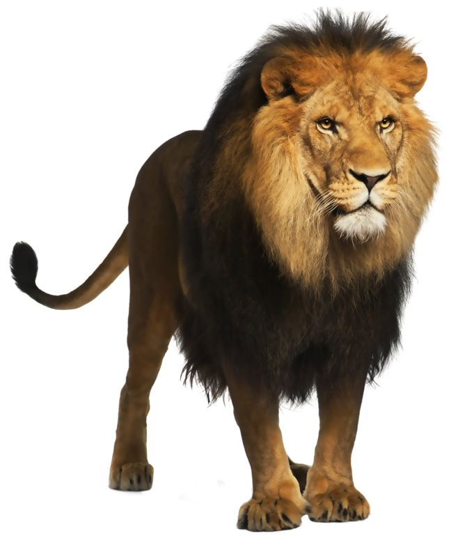
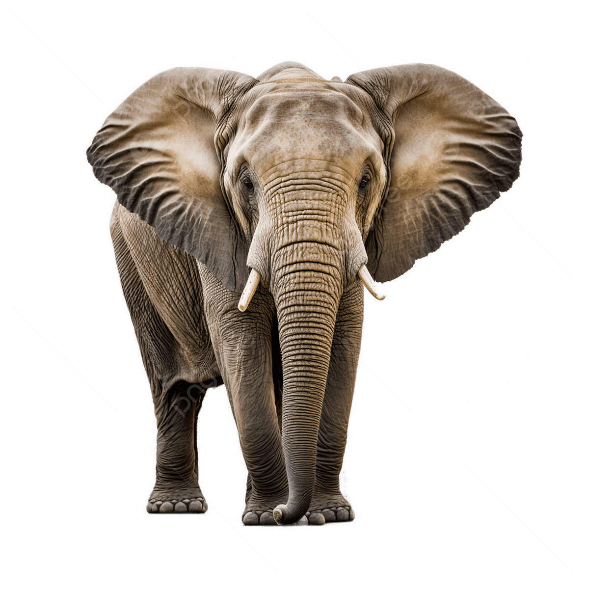
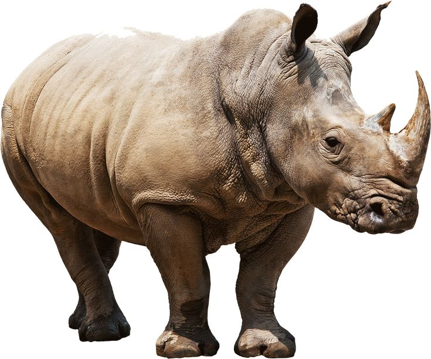
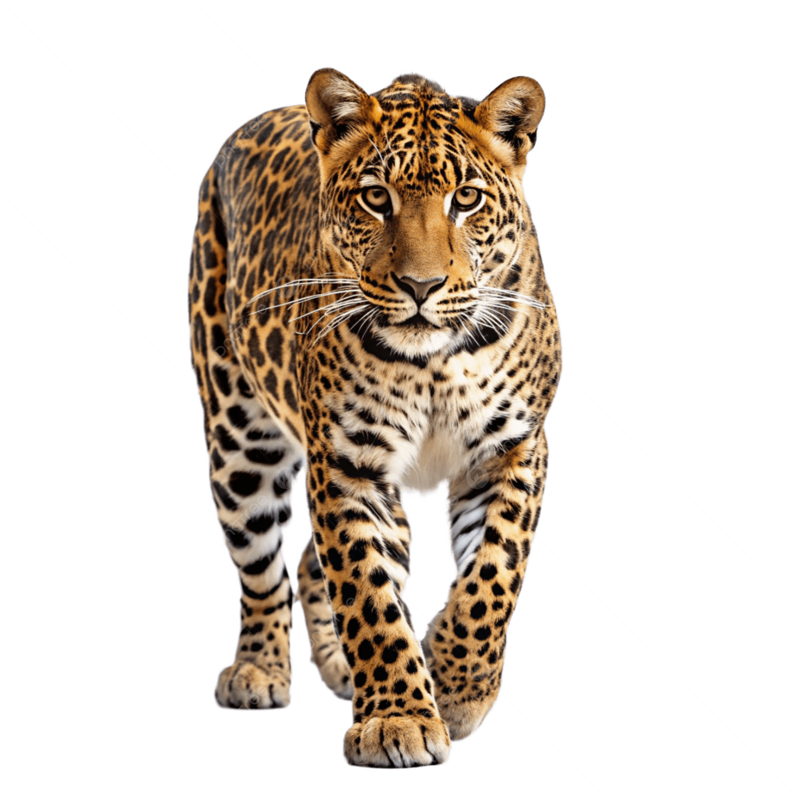
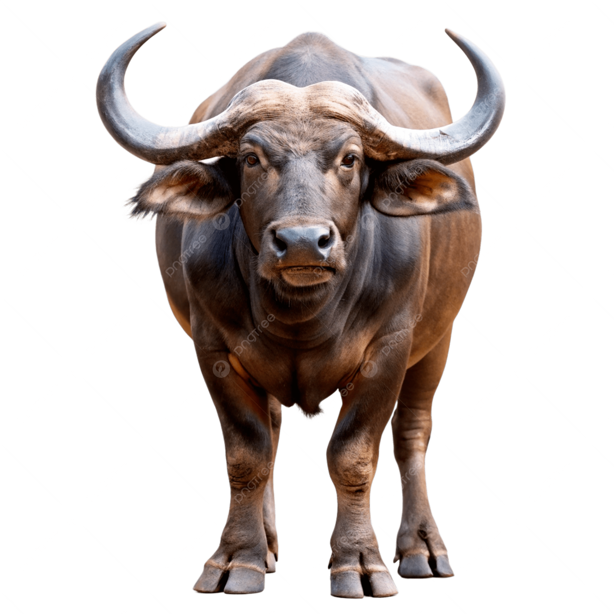
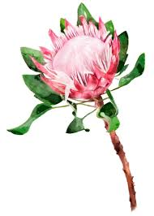

🌍 South Africa Basics
Three Capitals
South Africa has three capitals!
⚖️ Pretoria
🏛️ Cape Town
🌸 Bloemfontein
Most Colorful Flag!
6 colors — one of the most colorful flags in the world!
11 Languages!
More than almost any country! English is one of them.
English
Zulu
Xhosa
+ 8 more
🦁 The Big Five

01 · LION
Lion
Big and yellow
The lion has a beautiful mane — lionesses don't!
They have a very loud roar!
Lionesses do the hunting for food

02 · ELEPHANT
Elephant
Big and grey
Has a long trunk and very big ears
Loves to splash and play in water!

03 · RHINO
Rhino
Big, grey, and very strong
Has a sharp horn on its nose
Loves to walk and roll in the mud

04 · LEOPARD
Leopard
Big yellow cat with black spots
Very fast and incredibly quiet
Loves to climb trees!

05 · BUFFALO
Buffalo
Looks like a big, dark cow
Has two strong, curved horns
Lives in big family groups
Eats lots of green grass!
🏔️ Landmarks & Nature

Table Mountain
Flat on top like a table
Super old — dinosaur-aged mountain!
You can ride a cable car to the top!

The King Protea
National flower of South Africa
Looks like a pink crown for a king or queen!
Symbol of strength and beauty

Boulders Beach
Home to thousands of African Penguins!
Has giant, round rocks
Penguins make funny donkey noises!
Water is warm and safe